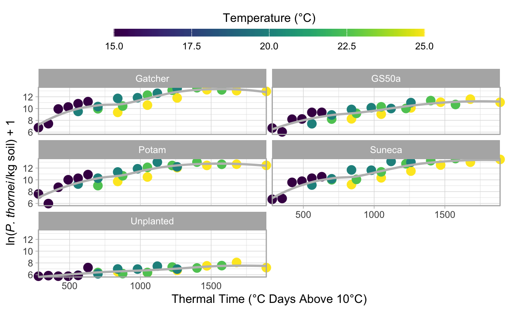
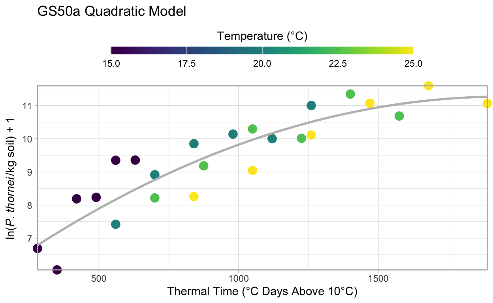
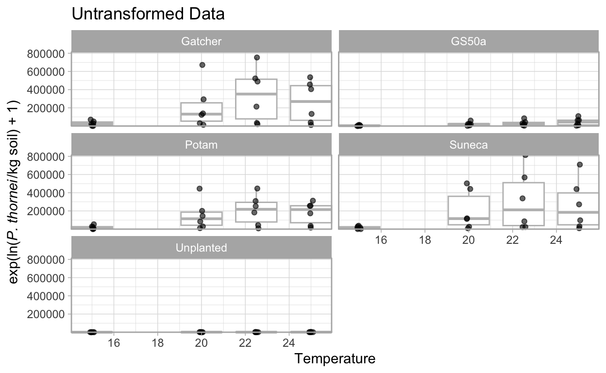
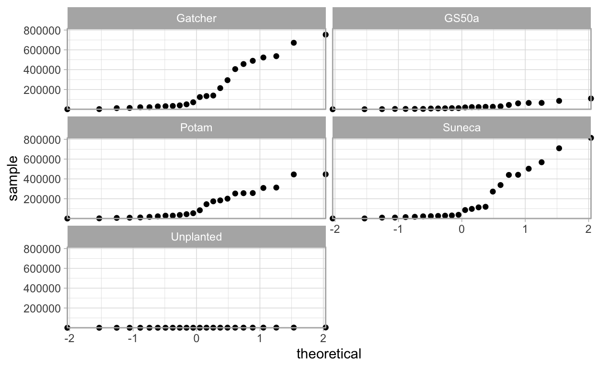
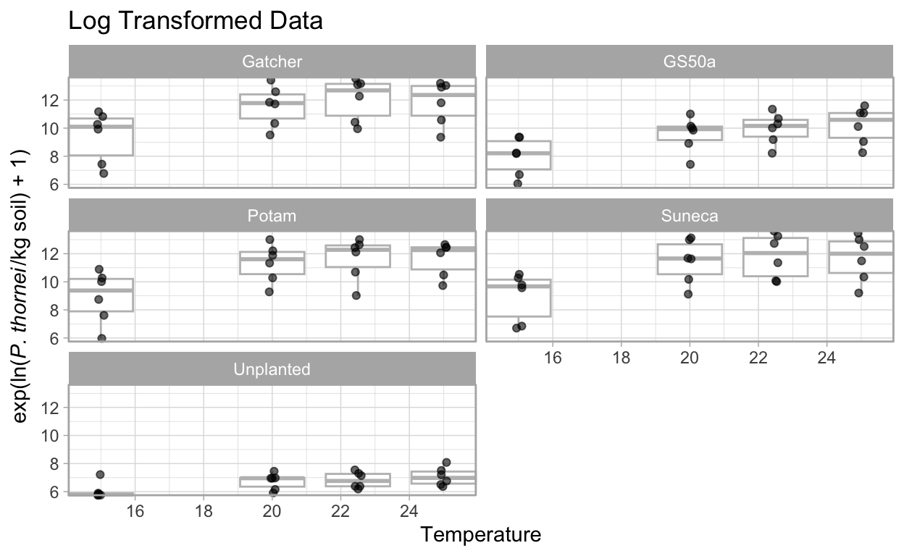

Pratylenchus thornei, the root-lesion nematode, is widely distributed in wheat (Triticum aestivum) growing areas of many countries and is of particular concern in sub-tropical environments (Thompson 2015). These nematodes penetrate roots to feed and reproduce in the root cortex leading to loss of root function, which affects nutrient and water uptake of nutrients and water causing nutrient deficiency and water stress (Thompson 2015). In the original paper the population response of P. thornei in Queensland, Australia wheat to temperature is modelled using a linear and quadratic equations. The study aimed to investigate the effects of soil profile temperatures after different sowing dates on reproduction of the nematodes in susceptible and moderately resistant wheat cultivars in the subtropical grain region of eastern Australia. This document recreates the models for population densities of P. thornei as described in the original paper.
There are two types of models described in the paper, the first model is a linear model used to describe the unplanted control and two quadratic models fit Gatcher (Susceptible) and GS50a (Moderately Resistant) wheat cultivars. For a more detailed discussion on fitting plant disease models in R, please see the “Linear Regression” module in the “Ecology and Epidemiology in R” documents available in the American Phytopathological Society’s (APS) Education Center. For an even more in-depth discussion on linear models in R, how to fit and how to interpret the diagnostics that R provides the reader should refer to Faraway (2002).
This post will illustrate how to fit the original linear and quadratic models using the original data in R (R Core Team 2017).
Using the tidyverse, (2017) package simplifies the libraries used in this work. It is a collection of packages designed to work together for data science, https://www.tidyverse.org/. The tidyverse includes, readr (2017b), used to import the data; tidyr (2018), used to format the data; dplyr (2017a), used to subset the data; and ggplot2 (2016), used for visualising the data and model fits. viridis (2018) is a selection of colour pallets that are widely accessible for people with colour-blindness and printing in black and white.
The following code chunk checks first to see if you have tidyverse and viridis installed, if not, it will automatically install them and then load them.
if (!require("tidyverse")) {
install.packages("tidyverse",
repos = c(CRAN = "https://cloud.r-project.org/"))
library("tidyverse")
}
if (!require("viridis")) {
install.packages("viridis",
repos = c(CRAN = "https://cloud.r-project.org/"))
library("viridis")
}
The data are located in the data sub-folder. Import the data using read_csv() function from readr and view them.
nema <- read_csv("data/Nematode_Data.csv")
nema
# A tibble: 24 × 9
Weeks Days Temperature Degree_days Unplanted Gatcher GS50a Potam
<dbl> <dbl> <dbl> <dbl> <dbl> <dbl> <dbl> <dbl>
1 8 56 15 280 5.75 6.77 6.69 7.61
2 8 56 20 560 5.92 9.51 7.42 9.28
3 8 56 22.5 700 6.38 9.96 8.21 9.02
4 8 56 25 840 6.51 9.35 8.25 9.73
5 10 70 15 350 5.85 7.44 6.04 5.97
6 10 70 20 700 6.16 10.3 8.91 10.3
7 10 70 22.5 875 6.19 10.4 9.18 10.7
8 10 70 25 1050 6.36 10.6 9.04 10.5
9 12 84 15 420 5.76 9.93 8.19 8.74
10 12 84 20 840 6.98 11.7 9.85 11.3
# … with 14 more rows, and 1 more variable: Suneca <dbl>nrow(nema)
[1] 24There are nine columns in the nema data described here in the following table.
| Field | Data Description |
|---|---|
| Weeks | Number of weeks after wheat sowing |
| Days | Number of days after wheat sowing |
| Temperature | Temperature (°C) treatment |
| Degree_Days | Average thermal time degree days above 10 °C for four soil depths (8, 15, 30 and 60 cm) |
| Unplanted |
Log*, log(), nematode population in the control treatment with no wheat planted
|
| Gatcher |
Log*, log(), nematode population in a susceptible wheat cultivar
|
| GS50a |
Log*, log(), nematode population in a moderately resistant wheat cultivar
|
| Potam |
Log*, log(), nematode population in a susceptible wheat cultivar
|
| Suneca |
Log*, log(), nematode population in a susceptible wheat cultivar
|
* For an exploration into the reasons why the data were transformed using the natural log log(), see the Exploring Why the Data Were Log Transformed in the Bonus Material section
|
You can see that each of the varieties have their own column in the original data format, this is commonly called wide data. Wide data are commonly found in spreadsheets but do not lend themselves easily to data analysis, modelling and visualisation. To make it easier to do these things it is common to convert the data from wide to long format, commonly referred to as tidying, when using R. The advantage of a tidy dataset is that it is easy to manipulate, model and visualize, and always has a specific structure where each variable is a column, each observation is a row, and each type of observational unit is a table (Wickham 2014).
In order to use ggplot2 for visualising the data, they need to be converted from wide to long. Using pivot_longer() from the tidyr package to convert from wide to long format where the varieties are all listed in a single column, Variety.
nema_long <- nema %>%
pivot_longer(cols = Unplanted:Suneca,
names_to = "Variety",
values_to = "Log_pop")
nema_long
# A tibble: 120 × 6
Weeks Days Temperature Degree_days Variety Log_pop
<dbl> <dbl> <dbl> <dbl> <chr> <dbl>
1 8 56 15 280 Unplanted 5.75
2 8 56 15 280 Gatcher 6.77
3 8 56 15 280 GS50a 6.69
4 8 56 15 280 Potam 7.61
5 8 56 15 280 Suneca 6.70
6 8 56 20 560 Unplanted 5.92
7 8 56 20 560 Gatcher 9.51
8 8 56 20 560 GS50a 7.42
9 8 56 20 560 Potam 9.28
10 8 56 20 560 Suneca 9.12
# … with 110 more rowsnrow(nema_long)
[1] 120As we see, the original nema data had only 24 rows and the long format of the data have 120 rows now.
Now that the data are in the format that ggplot2 uses, take a look at the data first to see what it looks like. Here we fit a smoothed line for each variety’s nematode population to the raw data. The individual temperature treatments are shown here by shape, the variety by colour.
ggplot(nema_long,
aes(
x = Degree_days,
y = Log_pop,
colour = Temperature,
group = Variety
)) +
geom_point(size = 3.5) +
geom_smooth(colour = "grey",
se = FALSE,
alpha = 0.5) +
ylab(expression(paste("ln(",
italic("P. thornei"),
"/kg soil) + 1"),
sep = "")) +
xlab("Thermal Time (°C Days Above 10°C)") +
theme_minimal() +
theme(legend.position = "top") +
guides(color = guide_colorbar(
title.position = "top",
title.hjust = .5,
barwidth = unit(20, "lines"),
barheight = unit(0.5, "lines")
)) +
scale_colour_viridis("Temperature (°C)") +
coord_cartesian(clip = "off",
expand = FALSE) +
facet_wrap(~ Variety, ncol = 2)

The paper uses a linear model for the unplanted control. Here we will write a function to use in modelling the unplanted population data. I have wrapped the model in a function which makes it pipe-able, %>% and has other advantages when it comes to fitting the same model to several sets of data.
In the linear equation for the Unplanted control treatment, the rate of population increase can be expressed as:
\[y = y_0 + rt\]
Where \(y_0\) is the initial population, \(r\) is the rate of change and \(t\) equal time.
linear_model <- function(df) {
lm(Log_pop ~ Degree_days,
data = df)
}
Now check the model fit, using filter() from dplyr to select only Unplanted data from the data set for the model and fit the linear model to the data.
unplanted_model <- nema_long %>%
filter(Variety == "Unplanted") %>%
linear_model()
Using par(mfrow = c(2, 2)) creates a four-panel graph rather than four individual graphs, which the next function will create by default when using R base graphics. If you want to arrange ggplot2 graphs, see A multi panel figure for coffee leaf rust for examples of this.
Using the plot() function with any lm() object will create four diagnostic plots for your inspection.
These plots do not appear to indicate anything amiss as one would hope for from the models that have already been published. If you are unfamiliar with how to interpret these diagnostic plots see Interpreting Linear Models in R in the Further Reading section.
Using the summary() function displays information about the model fit. If you are unfamiliar with how to read and interpret the output of summary() for a linear model, please refer to Interpreting Linear Models in R in the Further Reading section for references that go into more detail on this matter.
summary(unplanted_model)
Call:
lm(formula = Log_pop ~ Degree_days, data = df)
Residuals:
Min 1Q Median 3Q Max
-0.6605 -0.2581 -0.0568 0.2112 0.9851
Coefficients:
Estimate Std. Error t value Pr(>|t|)
(Intercept) 5.415064 0.192973 28.1 < 0.0000000000000002 ***
Degree_days 0.001295 0.000182 7.1 0.0000004 ***
---
Signif. codes: 0 '***' 0.001 '**' 0.01 '*' 0.05 '.' 0.1 ' ' 1
Residual standard error: 0.385 on 22 degrees of freedom
Multiple R-squared: 0.696, Adjusted R-squared: 0.683
F-statistic: 50.5 on 1 and 22 DF, p-value: 0.000000401From the original paper, the \(R^2\) value of the Unplanted linear model was 0.7, we can see here that agrees: 0.7. In the original paper, \(P\) < 0.001, R reports \(p-value:\) 0, which also agrees.
Using ggplot2’s geom_smooth() we can fit the same model above and graph the resulting line.
nema_long %>%
group_by(Variety) %>%
filter(Variety == "Unplanted") %>%
ggplot(aes(x = Degree_days,
y = Log_pop,
colour = Temperature)) +
geom_point(size = 3.5) +
geom_smooth(
method = "lm",
formula = y ~ x,
size = 1,
se = FALSE,
colour = "grey",
alpha = 0.5
) +
ylab(expression(paste("ln(",
italic("P. thornei"),
"/kg soil) + 1"),
sep = "")) +
xlab("Thermal Time (°C Days Above 10°C)") +
theme_minimal() +
theme(legend.position = "top") +
guides(color = guide_colorbar(
title.position = "top",
title.hjust = .5,
barwidth = unit(20, "lines"),
barheight = unit(0.5, "lines")
)) +
scale_colour_viridis("Temperature (°C)") +
coord_cartesian(clip = "off",
expand = FALSE) +
ggtitle("Unplanted Linear Model")
In the original paper, the quadratic model best described Gatcher and GS50a data, which are fit here.
Gatcher, Potam and Suneca all have very similar curves, here Gatcher is used to fit a quadratic model as in the original paper following the same methods as above for the linear model.
s_model <- nema_long %>%
filter(Variety == "Gatcher") %>%
quadratic_model()
par(mfrow = c(2, 2))
plot(s_model)
summary(s_model)
Call:
lm(formula = Log_pop ~ Degree_days + I(Degree_days^2), data = df)
Residuals:
Min 1Q Median 3Q Max
-1.807 -0.589 0.073 0.582 1.149
Coefficients:
Estimate Std. Error t value Pr(>|t|)
(Intercept) 5.476104048 0.904332841 6.06 0.0000052 ***
Degree_days 0.008961212 0.001909375 4.69 0.00012 ***
I(Degree_days^2) -0.000002612 0.000000901 -2.90 0.00858 **
---
Signif. codes: 0 '***' 0.001 '**' 0.01 '*' 0.05 '.' 0.1 ' ' 1
Residual standard error: 0.863 on 21 degrees of freedom
Multiple R-squared: 0.8, Adjusted R-squared: 0.781
F-statistic: 42 on 2 and 21 DF, p-value: 0.0000000462From the original paper, the \(R^2\) value of Gatcher’s quadratic model was 0.80, we can see here that agrees: 0.8. In the original paper, \(P\) < 0.001, R reports \(p-value:\) 0.0001, which also agrees.
The model visualisation is the same for the quadratic models as the linear model, however you will note that the line has a downward curve at higher temperatures.
nema_long %>%
group_by(Variety) %>%
filter(Variety == "Gatcher") %>%
ggplot(aes(x = Degree_days,
y = Log_pop,
colour = Temperature,)) +
geom_point(size = 3.5) +
geom_smooth(
method = "lm",
formula = y ~ x + I(x ^ 2),
size = 1,
se = FALSE,
colour = "grey",
alpha = 0.5
) +
ylab(expression(paste("ln(",
italic("P. thornei"),
"/kg soil) + 1"),
sep = "")) +
xlab("Thermal Time (°C Days Above 10°C)") +
theme_minimal() +
theme(legend.position = "top") +
guides(color = guide_colorbar(
title.position = "top",
title.hjust = .5,
barwidth = unit(20, "lines"),
barheight = unit(0.5, "lines")
)) +
scale_colour_viridis("Temperature (°C)") +
coord_cartesian(clip = "off",
expand = FALSE) +
ggtitle("Gatcher Quadratic Model")
GS50a, moderately resistant to P. thornei, also fits a quadratic model but the coefficients are slightly different due to different responses to the variety and temperature.
mr_model <- nema_long %>%
filter(Variety == "GS50a") %>%
quadratic_model()
par(mfrow = c(2, 2))
plot(mr_model)
summary(mr_model)
Call:
lm(formula = Log_pop ~ Degree_days + I(Degree_days^2), data = df)
Residuals:
Min 1Q Median 3Q Max
-1.1128 -0.3985 0.0289 0.4549 1.1860
Coefficients:
Estimate Std. Error t value Pr(>|t|)
(Intercept) 5.156893818 0.677913227 7.61 0.00000018 ***
Degree_days 0.006274415 0.001431321 4.38 0.00026 ***
I(Degree_days^2) -0.000001609 0.000000675 -2.38 0.02672 *
---
Signif. codes: 0 '***' 0.001 '**' 0.01 '*' 0.05 '.' 0.1 ' ' 1
Residual standard error: 0.647 on 21 degrees of freedom
Multiple R-squared: 0.823, Adjusted R-squared: 0.806
F-statistic: 48.9 on 2 and 21 DF, p-value: 0.0000000125From the original paper, the \(R^2\) value of GS50a’s quadratic model was 0.82, we can see here that agrees: 0.82. In the original paper, \(P\) < 0.001, R reports \(p-value:\) 0.0003, which also agrees.
nema_long %>%
group_by(Variety) %>%
filter(Variety == "GS50a") %>%
ggplot(aes(x = Degree_days,
y = Log_pop,
colour = Temperature,)) +
geom_point(size = 3.5) +
geom_smooth(
method = "lm",
formula = y ~ x + I(x ^ 2),
size = 1,
se = FALSE,
colour = "grey",
alpha = 0.5
) +
ylab(expression(paste("ln(",
italic("P. thornei"),
"/kg soil) + 1"),
sep = "")) +
xlab("Thermal Time (°C Days Above 10°C)") +
theme_minimal() +
theme(legend.position = "top") +
guides(color = guide_colorbar(
title.position = "top",
title.hjust = .5,
barwidth = unit(20, "lines"),
barheight = unit(0.5, "lines")
)) +
scale_colour_viridis("Temperature (°C)") +
coord_cartesian(clip = "off",
expand = FALSE) +
ggtitle("GS50a Quadratic Model")

As in the original paper, the model equations can be derived from these models as well. The derived regression equations are:
Gatcher (Susceptible): \[ln(P. thornei + 1) = -0.000003(0.0000009)T^2 + 0.009(0.0019)T + 5.4671(0.904)\]
GS50a (Moderately Resistant): \[ln(P. thornei + 1) = -0.000002(0.0000007)T^2 + 0.0063(0.0014)T + 5.1559(0.678)\]
Unplanted Control: \[ln(P. thornei + 1) = 0.0013(0.00018)T + 5.4151(0.193)\]
Refer back to the summary() outputs for each of the models for the coefficient values and \(R^2\) values, which match those reported in the original paper where the models were fit with Genstat.
Gatcher and GS50a have similar phenologies, but differ in resistance to root lesion nematodes, making the model comparisons a reasonable objective. The original paper goes on to test the effect of sowing date based on degree days. (Thompson 2015) reported a 61% increase in yield on average from sowing the susceptible, intolerant cultivar Gatcher at the end of May than sowing it in the third week of June. By June the soil temperatures and nematode populations were both greater, leading to lower wheat yield. The effects were less pronounced in the moderately resistant cultivar, GS50a, but were similar with a reduction in nematode population densities occurring due to earlier planting.
The models illustrated here for Gatcher and GS50a were able to accurately reflect the changes in nematode population as a result of degree days, which affected the nematodes’ ability to damage the crop and reduce yield (Thompson 2015).
In the paper the the natural log, ln() +1, of the nematode population counts were used to fit the models. Here we will explore a bit further why this was necessary.
A note about using log() + 1 rather than just log(). This is necessary with these data to avoid taking log(0). Try it in R to see what happens if you are not familiar.
First, plot the data for each of the four temperatures and the four varieties, plus the unplanted control converting from the natural log value back to the original actual count values to see what the population numbers look like. Note the use of exp() - 1 in the y aesthetic, to transform the values from the ln() + 1 values. Doing this shows us the original data’s values and helps demonstrate why the data were log transformed for analysis. To examine the data, first we will use boxplots and then quantile-quantile (qq) plots.
ggplot(nema_long,
aes(
x = Temperature,
y = exp(Log_pop) - 1,
group = Temperature
)) +
geom_boxplot(colour = "grey",
outlier.color = NA) +
geom_jitter(width = 0.1,
alpha = 0.6) +
ylab(expression(paste(
"exp(ln(",
italic("P. thornei"),
"/kg soil) + 1)"
),
sep = "")) +
facet_wrap(~ Variety,
ncol = 2) +
ggtitle("Untransformed Data") +
coord_cartesian(clip = "off",
expand = FALSE) +
theme_minimal()

ggplot(nema_long,
aes(sample = exp(Log_pop) - 1)) +
stat_qq() +
facet_wrap(~ Variety,
ncol = 2) +
coord_cartesian(clip = "off",
expand = FALSE) +
theme_minimal()

The boxplots show that there is a wide range of values with the 25 °C temperature populations close to zero with others having quite large ranges, this could indicate heteroscedasticity.
Also, looking at the qq-plots it is apparent that the original data do not meet the assumptions of normally distributed errors for a linear model. See the Further Reading section for suggested reading on interpreting qq-plots.
ggplot(nema_long,
aes(x = Temperature,
y = Log_pop,
group = Temperature)) +
geom_boxplot(colour = "grey",
outlier.color = NA) +
geom_jitter(width = 0.1,
alpha = 0.6) +
ylab(expression(paste(
"exp(ln(",
italic("P. thornei"),
"/kg soil) + 1)"
),
sep = "")) +
facet_wrap( ~ Variety,
ncol = 2) +
ggtitle("Log Transformed Data") +
coord_cartesian(clip = "off",
expand = FALSE) +
theme_minimal()

ggplot(nema_long,
aes(sample = Log_pop)) +
stat_qq() +
facet_wrap(~ Variety,
ncol = 2) +
coord_cartesian(clip = "off",
expand = FALSE) +
theme_minimal()
Here we see that the log() transformed data’s boxplots show fewer outliers and tighter range of values. The qq-plots also indicate that it is possible to conduct a linear regression with these data.
Even though the original paper used a linear model for the unplanted data, a polynomial model also fits these data quite well. We can compare the original linear model from the paper with a polynomial model quite easily in R to see how the models compare using AIC (Akaike information criterion). AIC is used to measure the models’ relative quality to each other.
Since the unplanted_model object already exists as a product of the linear model, we simply need to use the polynomial model with the unplanted data to create a new object to compare them.
unplanted_poly_model <- nema_long %>%
filter(Variety == "Unplanted") %>%
quadratic_model()
par(mfrow = c(2, 2))
plot(unplanted_poly_model)
summary(unplanted_poly_model)
Call:
lm(formula = Log_pop ~ Degree_days + I(Degree_days^2), data = df)
Residuals:
Min 1Q Median 3Q Max
-0.4870 -0.2387 -0.0804 0.1921 0.9747
Coefficients:
Estimate Std. Error t value Pr(>|t|)
(Intercept) 5.061614851 0.403124966 12.6 0.000000000031 ***
Degree_days 0.002125214 0.000851143 2.5 0.021 *
I(Degree_days^2) -0.000000401 0.000000402 -1.0 0.329
---
Signif. codes: 0 '***' 0.001 '**' 0.01 '*' 0.05 '.' 0.1 ' ' 1
Residual standard error: 0.385 on 21 degrees of freedom
Multiple R-squared: 0.71, Adjusted R-squared: 0.683
F-statistic: 25.7 on 2 and 21 DF, p-value: 0.00000226By this information, the \(R^2\) value is a bit better from the unplanted_poly_model, 0.7101, than the original unplanted_model’s, 0.6964. Using the same code from above it is easy to visualise the new model’s fit using ggplot2.
nema_long %>%
group_by(Variety) %>%
filter(Variety == "Unplanted") %>%
ggplot(aes(x = Degree_days,
y = Log_pop,
colour = Temperature, )) +
geom_point(size = 3.5) +
geom_smooth(
method = "lm",
formula = y ~ x + I(x ^ 2),
size = 1,
se = FALSE,
colour = "grey",
alpha = 0.5
) +
ylab(expression(paste("ln(",
italic("P. thornei"),
"/kg soil) + 1"),
sep = "")) +
xlab("Thermal Time (°C Days Above 10°C)") +
theme_minimal() +
theme(legend.position = "top") +
guides(color = guide_colorbar(
title.position = "top",
title.hjust = .5,
barwidth = unit(20, "lines"),
barheight = unit(0.5, "lines")
)) +
coord_cartesian(clip = "off",
expand = FALSE) +
scale_colour_viridis("Temperature (°C)") +
ggtitle("Unplanted Quadratic Model")
Checking the model fit visually, we can see that it fits the data nicely. To get a better feel for how these models compare, AIC can be used to determine the relative quality of a model for a given set of data. That is, you cannot compare models for other data using AIC.
Checking the AIC is quite simple in R, just AIC(). Here we check the AIC of the original linear unplanted_model and the new unplanted_poly_model.
Ideally when fitting models, you look for the least complex model that provides the best explanation of the variation in the data. In this case the original linear model has a lower AIC, 26.1715, than that of the polynomial model, 27.058, but they are extremely close and the \(R^2\) value of the polynomial model, 0.7101, is a bit better than the linear model’s \(R^2\), 0.6964, as well. Therefore, without more data to distinguish the models it appears that either model suffices for the data provided.
Wickham (2014) introduced the idea of tidy data for analysis. As you work with raw data from many sources, it is useful to understand what this means and why it is useful. In this example, tidyr was used to convert the data from wide to long format. For a more in-depth look at using tidyr see:
The University of Georgia has a nice, easy to understand set of materials that demonstrate how to interpret diagnostic plot outputs from plot(lm.object), Regression diagnostic plots on their Data Analysis in the Geosciences page. For even more, this Cross Validated question has an excellent discussion on Interpreting plot.lm().
The University of Montana provides an on-line text, “Statistics With R,” that includes a section on ANOVA model diagnostics including QQ-plots. Since ANOVA uses lm() in R, the tools and descriptions here are applicable to the qq-plots we have generated here in this illustration.
For a detailed look at how to interpret the output from summary() for linear models, see The YHAT Blog post, Fitting & Interpreting Linear Models in R.
Faraway (2002), “Practical Regression and Anova using R” is an excellent free resource that goes into detail about fitting linear models using R and how to interpret the diagnostics. Prof. Faraway has more recent books on the subject as well that you might wish to borrow from your library or purchase, see http://www.maths.bath.ac.uk/~jjf23/LMR/ for more details.
Selecting good colour schemes is essential for communicating your message. The viridis package makes this much easier to do. Bob Rudis has a nice blog post when the package was first introduced that demonstrates why it is useful to use a package like this for your colour palettes, Using the new ‘viridis’ colormap in R (thanks to Simon Garnier). Other colour palettes for R exist as well. Notably the RColorBrewer package provides an easy-to-use interface for the fantastic Color Brewer palettes http://colorbrewer2.org/ commonly used for cartography but also useful for graphs.
This article was original published in 2018 on Open Plant Pathology shortly after we launched. Since then it has been updated with minor changes to the R code to bring it up-to-date with the latest libraries and present cleaner figures and integrate into the new website framework that OPP now uses. Changes since the original can be viewed using the link below that compares the original article with this version. The message and scientific contents remain the same.
AHS, 2021.08.04
─ Session info ─────────────────────────────────────────────────────
setting value
version R version 4.1.0 (2021-05-18)
os macOS Big Sur 11.5.1
system aarch64, darwin20
ui X11
language (EN)
collate en_AU.UTF-8
ctype en_AU.UTF-8
tz Australia/Perth
date 2021-08-04
─ Packages ─────────────────────────────────────────────────────────
package * version date lib
assertthat 0.2.1 2019-03-21 [2]
backports 1.2.1 2020-12-09 [2]
bit 4.0.4 2020-08-04 [1]
bit64 4.0.5 2020-08-30 [1]
broom 0.7.9 2021-07-27 [1]
bslib 0.2.5.1 2021-05-18 [2]
cellranger 1.1.0 2016-07-27 [2]
cli 3.0.1 2021-07-17 [1]
colorspace 2.0-2 2021-06-24 [1]
crayon 1.4.1 2021-02-08 [2]
DBI 1.1.1 2021-01-15 [2]
dbplyr 2.1.1 2021-04-06 [2]
digest 0.6.27 2020-10-24 [2]
distill 1.2 2021-01-13 [1]
downlit 0.2.1 2020-11-04 [2]
dplyr * 1.0.7 2021-06-18 [1]
ellipsis 0.3.2 2021-04-29 [2]
evaluate 0.14 2019-05-28 [2]
fansi 0.5.0 2021-05-25 [2]
farver 2.1.0 2021-02-28 [2]
forcats * 0.5.1 2021-01-27 [2]
fs 1.5.0 2020-07-31 [2]
generics 0.1.0 2020-10-31 [2]
ggplot2 * 3.3.5 2021-06-25 [1]
glue 1.4.2 2020-08-27 [2]
gridExtra 2.3 2017-09-09 [2]
gtable 0.3.0 2019-03-25 [2]
haven 2.4.1 2021-04-23 [2]
highr 0.9 2021-04-16 [2]
hms 1.1.0 2021-05-17 [2]
htmltools 0.5.1.1 2021-01-22 [2]
httr 1.4.2 2020-07-20 [2]
jquerylib 0.1.4 2021-04-26 [2]
jsonlite 1.7.2 2020-12-09 [2]
kableExtra * 1.3.4 2021-02-20 [1]
knitr 1.33 2021-04-24 [2]
labeling 0.4.2 2020-10-20 [2]
lattice 0.20-44 2021-05-02 [2]
lifecycle 1.0.0 2021-02-15 [2]
lubridate 1.7.10 2021-02-26 [2]
magrittr 2.0.1 2020-11-17 [2]
Matrix 1.3-3 2021-05-04 [2]
mgcv 1.8-35 2021-04-18 [2]
modelr 0.1.8 2020-05-19 [2]
munsell 0.5.0 2018-06-12 [2]
nlme 3.1-152 2021-02-04 [2]
pillar 1.6.2 2021-07-29 [1]
pkgconfig 2.0.3 2019-09-22 [2]
purrr * 0.3.4 2020-04-17 [2]
R6 2.5.0 2020-10-28 [2]
Rcpp 1.0.7 2021-07-07 [1]
readr * 2.0.0 2021-07-20 [1]
readxl 1.3.1 2019-03-13 [2]
reprex 2.0.0 2021-04-02 [2]
rlang 0.4.11 2021-04-30 [2]
rmarkdown 2.9 2021-06-15 [1]
rstudioapi 0.13 2020-11-12 [2]
rvest 1.0.1 2021-07-26 [1]
sass 0.4.0.9000 2021-06-16 [2]
scales 1.1.1 2020-05-11 [2]
sessioninfo 1.1.1 2018-11-05 [2]
stringi 1.7.3 2021-07-16 [1]
stringr * 1.4.0 2019-02-10 [2]
svglite 2.0.0 2021-02-20 [1]
systemfonts 1.0.2 2021-05-11 [2]
tibble * 3.1.3 2021-07-23 [1]
tidyr * 1.1.3 2021-03-03 [2]
tidyselect 1.1.1 2021-04-30 [2]
tidyverse * 1.3.1 2021-04-15 [1]
tzdb 0.1.2 2021-07-20 [1]
utf8 1.2.2 2021-07-24 [1]
vctrs 0.3.8 2021-04-29 [2]
viridis * 0.6.1 2021-05-11 [2]
viridisLite * 0.4.0 2021-04-13 [2]
vroom 1.5.3 2021-07-14 [1]
webshot 0.5.2 2019-11-22 [1]
withr 2.4.2 2021-04-18 [2]
xfun 0.24 2021-06-15 [1]
xml2 1.3.2 2020-04-23 [2]
yaml 2.2.1 2020-02-01 [2]
source
CRAN (R 4.1.0)
CRAN (R 4.1.0)
CRAN (R 4.1.0)
CRAN (R 4.1.0)
CRAN (R 4.1.0)
CRAN (R 4.1.0)
CRAN (R 4.1.0)
CRAN (R 4.1.0)
CRAN (R 4.1.0)
CRAN (R 4.1.0)
CRAN (R 4.1.0)
CRAN (R 4.1.0)
CRAN (R 4.1.0)
CRAN (R 4.1.0)
CRAN (R 4.1.0)
CRAN (R 4.1.0)
CRAN (R 4.1.0)
CRAN (R 4.1.0)
CRAN (R 4.1.0)
CRAN (R 4.1.0)
CRAN (R 4.1.0)
CRAN (R 4.1.0)
CRAN (R 4.1.0)
CRAN (R 4.1.0)
CRAN (R 4.1.0)
CRAN (R 4.1.0)
CRAN (R 4.1.0)
CRAN (R 4.1.0)
CRAN (R 4.1.0)
CRAN (R 4.1.0)
CRAN (R 4.1.0)
CRAN (R 4.1.0)
CRAN (R 4.1.0)
CRAN (R 4.1.0)
CRAN (R 4.1.0)
CRAN (R 4.1.0)
CRAN (R 4.1.0)
CRAN (R 4.1.0)
CRAN (R 4.1.0)
CRAN (R 4.1.0)
CRAN (R 4.1.0)
CRAN (R 4.1.0)
CRAN (R 4.1.0)
CRAN (R 4.1.0)
CRAN (R 4.1.0)
CRAN (R 4.1.0)
CRAN (R 4.1.0)
CRAN (R 4.1.0)
CRAN (R 4.1.0)
CRAN (R 4.1.0)
CRAN (R 4.1.0)
CRAN (R 4.1.0)
CRAN (R 4.1.0)
CRAN (R 4.1.0)
CRAN (R 4.1.0)
CRAN (R 4.1.0)
CRAN (R 4.1.0)
CRAN (R 4.1.0)
Github (rstudio/sass@f148415)
CRAN (R 4.1.0)
CRAN (R 4.1.0)
CRAN (R 4.1.0)
CRAN (R 4.1.0)
CRAN (R 4.1.0)
CRAN (R 4.1.0)
CRAN (R 4.1.0)
CRAN (R 4.1.0)
CRAN (R 4.1.0)
CRAN (R 4.1.0)
CRAN (R 4.1.0)
CRAN (R 4.1.0)
CRAN (R 4.1.0)
CRAN (R 4.1.0)
CRAN (R 4.1.0)
CRAN (R 4.1.0)
CRAN (R 4.1.0)
CRAN (R 4.1.0)
CRAN (R 4.1.0)
CRAN (R 4.1.0)
CRAN (R 4.1.0)
[1] /Users/adamsparks/Library/R/arm64/4.1/library
[2] /Library/Frameworks/R.framework/Versions/4.1-arm64/Resources/libraryView all changes to this article since it was first published. If you see mistakes or want to suggest changes, please create an issue on the source repository.
Text and figures are licensed under Creative Commons Attribution CC BY 4.0. Source code is available at https://github.com/adamhsparks/Modelling_Nematode_Populations, unless otherwise noted. The figures that have been reused from other sources don't fall under this license and can be recognized by a note in their caption: "Figure from ...".
For attribution, please cite this work as
Sparks & Thompson (2021, Aug. 4). Open Plant Pathology: Linear modelling of soil temperature effects on root lesion nematode population densities in R. Retrieved from https://openplantpathology.org/posts/2021-08-04-nematodemodelling/
BibTeX citation
@misc{sparks2021linear,
author = {Sparks, Adam H. and Thompson, John P.},
title = {Open Plant Pathology: Linear modelling of soil temperature effects on root lesion nematode population densities in R},
url = {https://openplantpathology.org/posts/2021-08-04-nematodemodelling/},
year = {2021}
}